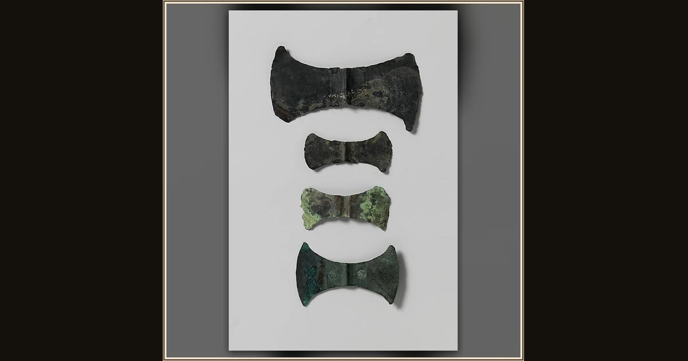

Bronze double-ax head
Unknown · ca. 1700–1450 BCE · The Metropolitan Museum of Art · New York, USA
Odysseus’s contest is to send a single arrow flying through a row of twelve axe-heads set up down the hall. This Minoan double-axe, older than the story itself and probably a votive offering, is evocative of the very blades whose line made that impossible-look